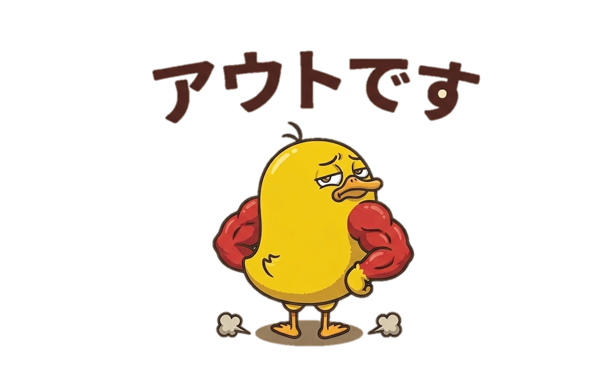
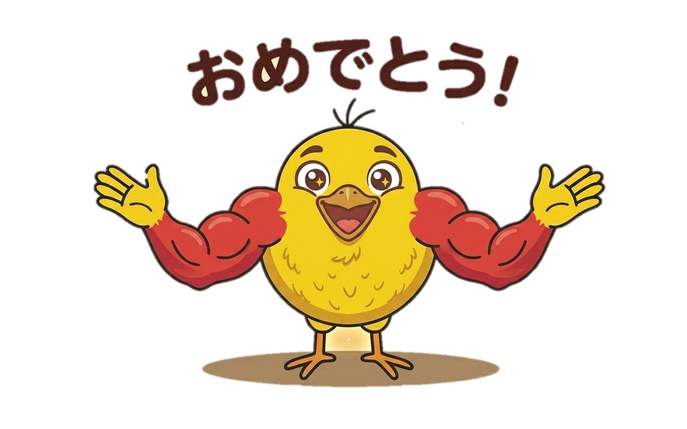

100万円比 +3.1%。日次の資産推移、取引数、保有銘柄をまとめて確認。
公開実績を読む UPDATE 実績アーカイブ日次変化と月次の公開実績を、あとから確認しやすい形で積み上げます。
履歴へ GUIDE 銘柄検討テンプレ注目理由、数字、売買条件、振り返りを同じ型で追える記事棚。
記事一覧へ LOGIC 投資ロジック紹介シグナル、エントリー、撤退の一部を公開できる範囲で整理。
ロジックへ OFFICIAL X MUKIMUKI trade 公式X日々の実績速報、更新通知、相場メモを短く確認できます。
@OnigoGamesPERFORMANCE
Autotrade実績データ
対象日: 2026.05.26 EST / レポート生成: 2026.05.27 05:00:25 JST
ASSET LINE
100万円チャレンジ資産曲線
READ NEXT
読みたい内容だけ選べる記事棚。
画像は小さな目印にして、タイトル・要点・次の行動がすぐ分かる形に絞ります。


STOCK NOTE
銘柄検討は、この4項目に固定。
注目理由
テーマ、業績変化、ニュース、株価位置のどれで見ているか。
数字
売上、利益率、キャッシュフロー、決算日、ガイダンス。
売買条件
買う価格、分割、損切り、決算跨ぎ、撤退条件。
振り返り
結果、良かった判断、次回直す点を短く記録。
ARCHIVE
実績履歴
AFFILIATE
moomoo証券は、銘柄確認の文脈で紹介。
このサイトでは、実績記事や銘柄検討の流れから、ニュース・チャート・米国株情報を確認する導線としてmoomoo証券を掲載します。
運営方針
数字はAutotradeのレポートをもとに更新します。サイトは実績と考え方の保存場所として運営します。掲載内容は情報提供を目的とし、特定銘柄の売買を推奨するものではありません。